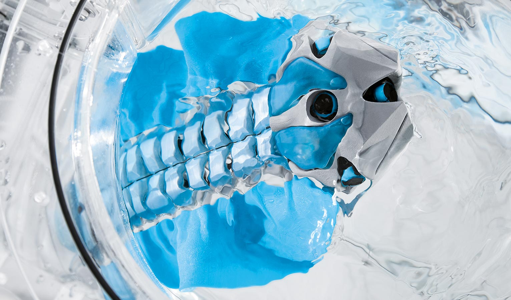
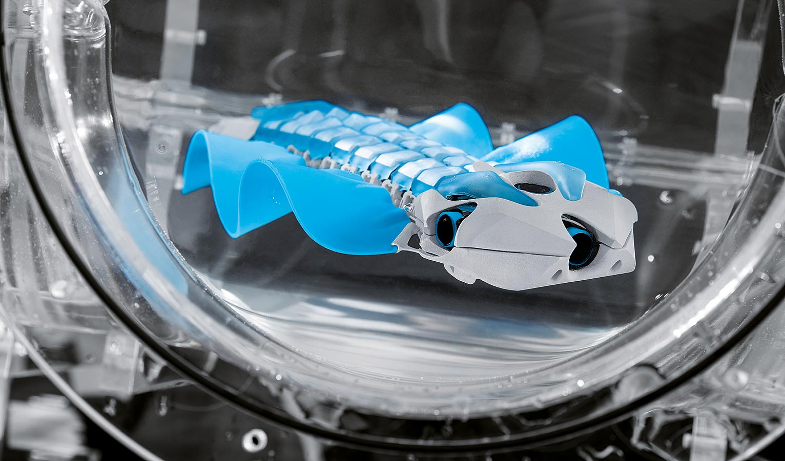
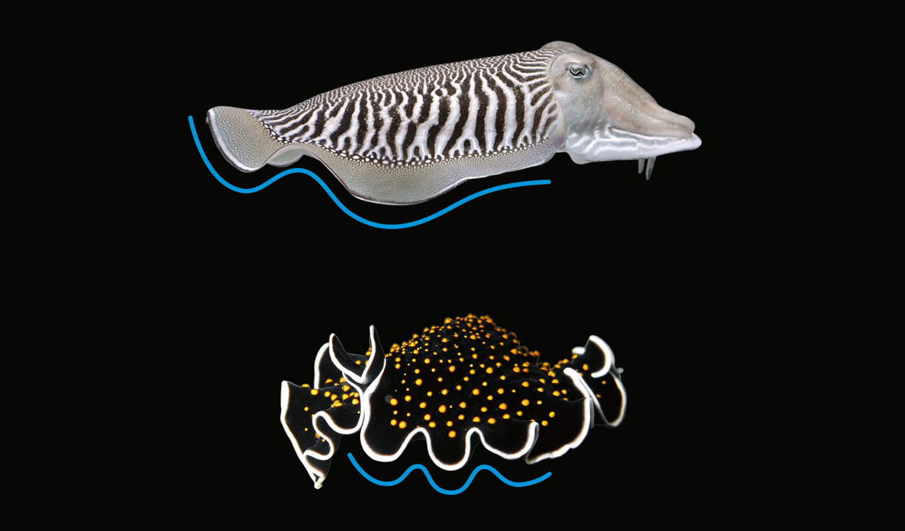

BionicFinWave
Underwater robot with unique fin drive
The marine planarian, cuttlefish and Nile perch have one thing in common: in order to propel themselves, they use their fins to generate a continuous wave, which advances along their entire length. With this so-called undulating fin movement, the BionicFinWave also manoeuvres through a pipe system made of acrylic glass. At the same time the autonomous underwater robot is able to communicate with the outside world wirelessly and transmit data – such as the recorded sensor values for temperature and pressure – to a tablet.
The fins on the natural role models run from head to tail and are located either on the back, the stomach or on both sides of the body. The wave-shaped movement of the fins allows the fish to push the water behind them, thereby creating a forward thrust. Conversely the creatures can also swim backwards in this way and, depending on the wave pattern, create uplift, downforce or even lateral thrust.
Flexible silicone fins for natural swimming manoeuvres
The BionicFinWave uses its two side fins to move along. They are completely cast from silicone and do without struts or other support elements. This makes them extremely flexible and thus able to implement the fluid wave movements of their biological role models true to nature.
For this purpose, the two fins on the left and right are each fastened to nine small lever arms. These in turn are driven by two servo motors located in the body of the underwater robot. Two attached crankshafts transfer the force to the levers in such a way that the two fins can move individually. They can thereby generate different wave patterns, which are particularly suitable for a slow and precise movement and whirl up water less than a conventional screw drive does, for example.
In order to swim in a curved line, for example, the outer fin moves faster than the inner one – similar to the chains on a digger. A third servo motor on the head of the BionicFinWave controls the flexure of the body, which helps it to swim up and down. So that the crankshafts are suitably flexible and supple, a cardan joint is fitted between each lever segment. For this purpose the crankshafts including the joints and the connecting rod were made out of a single piece of plastic with the 3D printing method.

Intelligent interaction of a wide range of components
The remaining elements in the BionicFinWave’s body are also 3D-printed. With their cavities, they act as flotation units. At the same time, the entire control and regulation technology system is installed safely and watertight here in the smallest of spaces and coordinated. Thus, besides the circuit board with processor and remote module, the front of the body also houses a pressure sensor and ultrasound sensors. They constantly measure the distances to the walls as well as the depth in the water, thus preventing collisions with the pipe system.
